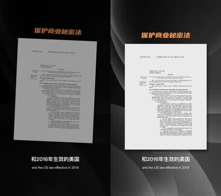

From Expert Script to Finished Video:
An Editing Pipeline Built with Claude
Abstract
Specialists such as lawyers know their subject well but have little time to turn it into video. Qiyuan Studio takes an expert's draft script and returns a finished, edited lecture. We built the production pipeline with Claude Code. Claude rewrites the draft for narration and flags facts for the expert to confirm. Narration and an on-screen presenter are generated from the approved script. Our own editing tool then assembles the timeline in DaVinci Resolve from a library of versioned effect modules, and reads the timeline back to confirm each change actually happened. Clients comment on scripts in a shared review page. Edited by hand, an episode took us 6 to 9 hours. We are using the pipeline on a 30-episode series about U.S. patent law and Section 337 investigations for a U.S. intellectual property law firm. We have not yet measured how much time it saves per episode; Section 6 says what we know and what we do not.
1Introduction
Explainer videos for professional services have a shape that repeats: one presenter, source documents that must be shown exactly, bilingual subtitles, and a client who checks every legal statement. Most of the editing time goes into the same moves done again by hand, such as placing a statute on screen, pushing in on a highlighted line, or keeping subtitles in sync after a cut. That repetition is what we automate.
Our rule is that the editor stays in charge. Effects that a person has approved become modules that can be called again. Anything not yet approved stays manual.
2Pipeline
- Script. Claude rewrites the expert's draft for speaking and marks claims that need the expert's confirmation. The original draft is never edited in place; every version is kept side by side.
- Voice and presenter. Text-to-speech narration in the client's chosen voice, then an AI presenter video driven by that audio.
- Edit. Our editing tool (Section 3) assembles the timeline in DaVinci Resolve: layouts, source documents, b-roll, subtitles and chapter markers.
- Review. The client reads scripts and leaves comments on a review page we host. Comments go into the next revision.
3The editing tool
DaVinci Tool is a local app that drives Resolve through its scripting API. Each visual effect is a module with a version number. A module is used only after a person has approved how it looks on a real episode. Claude Code builds and maintains the tool, and calls it during production through a fixed sequence: look up the effect, plan the change, apply it, then read back the result.

4Safeguards
An editing tool that writes into a client's project must not do damage quietly. Each rule below exists because of something that once went wrong:
- Module templates are locked by SHA-256. If a file changes, plans made against the old version stop working.
- Every write names its target project, timeline and track explicitly. The tool never guesses.
- One worker talks to Resolve at a time. Every request has an idempotency key, so sending the same request twice does not create duplicates.
- A run counts as successful only after the tool has read the timeline back and seen the change. If the worker stops mid-run, the result is marked for checking and never retried blindly.
- Anything an editor changed by hand blocks overwriting. The tool lists the differences and waits for a person to decide.
5Case study: a Section 337 lecture series
The first production use is a series of explainer lectures on U.S. patent law and Section 337 investigations at the U.S. International Trade Commission, for a U.S.-based intellectual property law firm. Episodes are vertical video with Chinese narration and English subtitles. They often quote statutes and case documents, which must appear on screen exactly as published.

| Item | Value |
|---|---|
| Episodes planned | 30 |
| Episodes in production or delivered | 8 |
| Format | 1080×1920, 25 fps |
| Hand-editing time per episode (before the tool) | 6–9 h |
| Effect modules in the library | 13 |
| Automated tests in the tool | 174 |
6Limitations
We have not yet measured net time saved. Building the tool while delivering episodes took real effort. Episode turnaround is now about two days, but those two days include client review, so they cannot be compared directly with the hand-editing figure in Table 1. The modules were approved for one series format, and a new client format would need its own approval round. Every result so far comes from a single client.